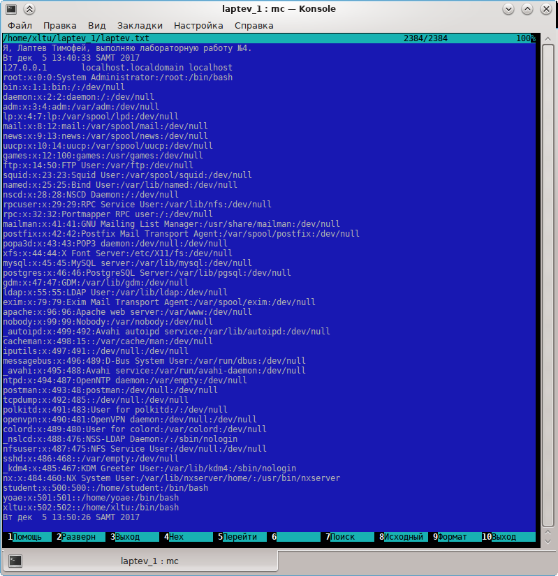

Лабораторная работа №2
1. Открыть терминал.
2. В терминале ввести команду:
$ mc
3. Рекомендуемые настройки.
3.1. Показывать экран терминала после выполнения команды.
3.2. Увеличиваем жизненное пространство - убираем линейку меню и строку подсказки.
3.3. Сохраняем сделанные настройки.
4. Справочная система mc.
5. Выполнить в mc несколько действий.
Порядок сдачи лабораторной.
В отчёте должно быть:
а) задание на лабу;
б) распечатка файла <фамилия_латинскими_буквами.txt>;
в) распечатка скрина экрана с качеством, достаточным, чтобы можно было прочесть информацию в окне терминала.
г) объяснение (комментарии) проделанной работы
Выполнение и отчёт.
1. Открыл терминал и ввёл команду $ mc
2. В «Параметрах Конфигурации» настроил паузу после выполнения.
3. Увеличил жизненное пространство.
4. Создал в домашнем каталоге каталог «laptev_1»
5. В окне встроенного редактора mc ввел текст и сохранил файл с именем «laptev_1.txt»
Добавил в созданный файл текущую дату и время командой date.
6. Командой сат добавил содержимое файла hosts в файл «laptev_1.txt»;
